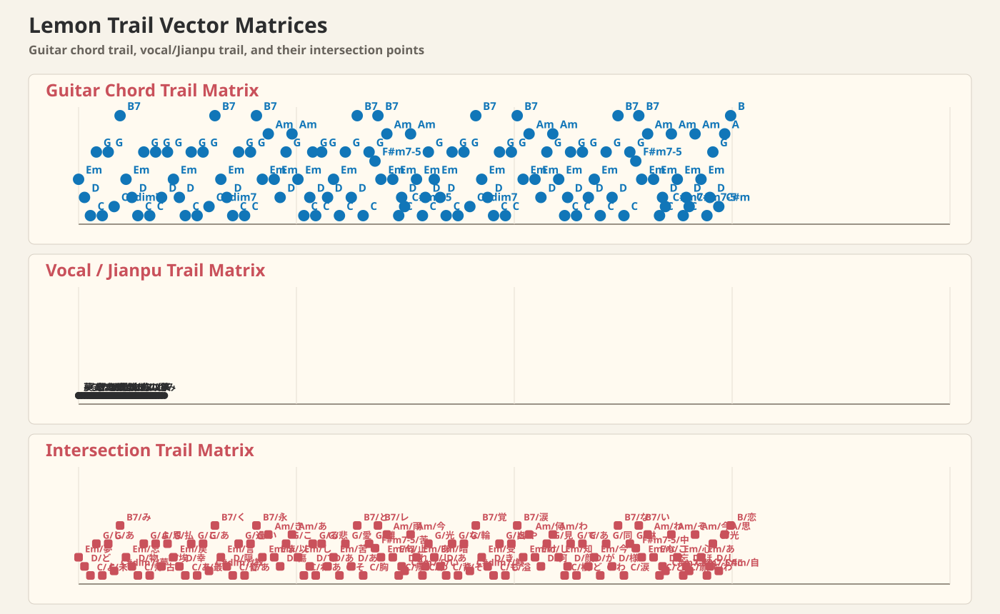

Lemon
米津玄師 詞：米津玄師 曲：米津玄師
- 原調
- B
- Play
- G
- Capo
- 4
- Beat
- 4/4
前奏
| EmD| CG| CG| C#dim7B7 |
A1
夢ならばどれほどよかったでしょう未だにあなたのことを夢にみる
Yume naraba dore hodo yokatta deshou imada ni anata no koto o yume ni miru
忘れた物を取りに帰るように
Wasureta mono o tori ni kaeru you ni
古びた思い出の埃を払う
Furubita omoide no hokori o harau
A2
戻らない幸せがあることを
Modoranai shiawase ga aru koto o
最後にあなたが教えてくれた
Saigo ni anata ga oshiete kureta
言えずに隠してた昏い過去も
Iezu ni kakushiteta kurai kako mo
あなたがいなきゃ永遠に昏いまま
Anata ga inakya eien ni kurai mama
きっともうこれ以上傷つくことなど
Kitto mou kore ijou kizutsuku koto nado
ありはしないとわかっている
Ari wa shinai to wakatte iru
副歌1
あの日の悲しみさえあの日の苦しみさえ
Ano hi no kanashimi sae ano hi no kurushimi sae
そのすべてを愛してたあなたとともに
Sono subete o aishiteta anata to tomo ni
胸に残り離れない苦いレモンの匂い
Mune ni nokori hanarenai nigai remon no nioi
雨が降り止むまでは帰れない
Ame ga furiyamu made wa kaerenai
今でもあなたはわたしの光
Ima demo anata wa watashi no hikari
A3
暗闇であなたの背をなぞった
Kurayami de anata no se o nazotta
その輪郭を鮮明に覚えている
Sono rinkaku o senmei ni oboete iru
受け止めきれないものと出会うたび
Uketomekirenai mono to deau tabi
溢れてやまないのは涙だけ
Afurete yamanai no wa namida dake
何をしていたの何を見ていたの
Nani o shite ita no nani o mite ita no
わたしの知らない横顔で
Watashi no shiranai yokogao de
副歌2
どこかであなたが今
Dokoka de anata ga ima
わたしと同じ様な
Watashi to onaji you na
涙にくれ淋しさの中にいるなら
Namida ni kure sabishisa no naka ni iru nara
わたしのことなどどうか忘れてください
Watashi no koto nado douka wasurete kudasai
そんなことを心から願うほどに
Sonna koto o kokoro kara negau hodo ni
今でもあなたはわたしの光
Ima demo anata wa watashi no hikari
間奏
| EmD| CG| CG| C#dim7B7 || G--B |
D
自分が思うより恋をしていたあなたに
Jibun ga omou yori koi o shite ita anata ni
あれから思うように息ができない
Are kara omou you ni iki ga dekinai
あんなに側にいたのにまるで嘘みたい
Anna ni soba ni ita noni marude uso mitai
とても忘れられないそれだけが確か
Totemo wasurerarenai sore dake ga tashika
ラスサビ
あの日の悲しみさえあの日の苦しみさえ
Ano hi no kanashimi sae ano hi no kurushimi sae
そのすべてを愛してたあなたとともに
Sono subete o aishiteta anata to tomo ni
胸に残り離れない苦いレモンの匂い
Mune ni nokori hanarenai nigai remon no nioi
雨が降り止むまでは帰れない
Ame ga furiyamu made wa kaerenai
切り分けた果実の片方の様に
Kiriwaketa kajitsu no katahou no you ni
今でもあなたはわたしの光
Ima demo anata wa watashi no hikari
